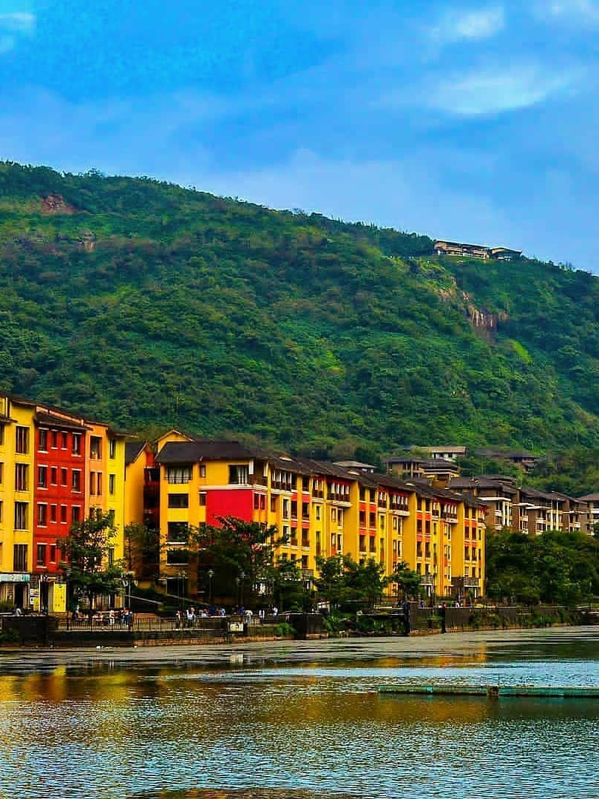

LAVASA , MAHARASHTRA

Lavasa is a private, planned city built near Pune, India. It is stylistically based on the Italian town Portofino, with a street and several buildings bearing the name of that town.
A 100-square-kilometre (39 sq mi)or 32-square-kilometre (12 sq mi) project being developed by HCC, this as-yet-incomplete city has been controversial for multiple reasons including procurement of land, harm to the environment,and loans acquired through political corruption.
In late 2010, the Indian Environment and Forests Ministry ordered that construction cease because the project violated environmental laws. As of late 2011, this order has been rescinded. The project's scale may have been reduced, however, and an initial public offering may not occur. The head of the company working on the project said in 2013 that due to the Environment and Forests Ministry, the project had "lost three years.